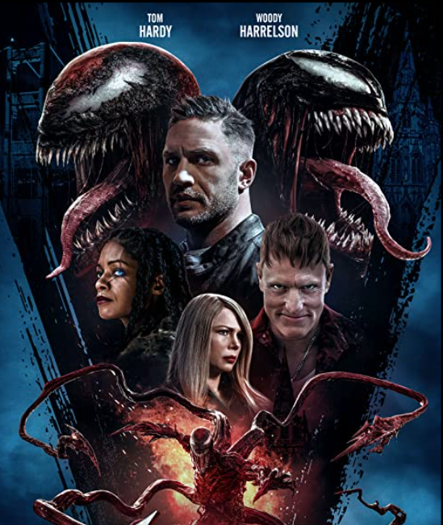

No Time to Die
Bond ha dejado el servicio. Su recién encontrada paz es interrumpida por una visita de su amigo de la CIA Felix Leiter. Bond y Leiter le siguen la pista a un misterioso villano en posesión de peligrosas nuevas tecnologías.
El juego del Calamar

456 participantes desesperados compiten en un misterioso y mortífero concurso de supervivencia compuesto de varias rondas de juegos infantiles. ¿La meta? Ganar 45.600 millones de wones y salir de la miseria.
Venom
Eddie Brock intenta relanzar su carrera entrevistando al asesino en serie Cletus Kasady, que se convierte en el huésped del simbionte Carnage y escapa de la cárcel tras una ejecución fallida.